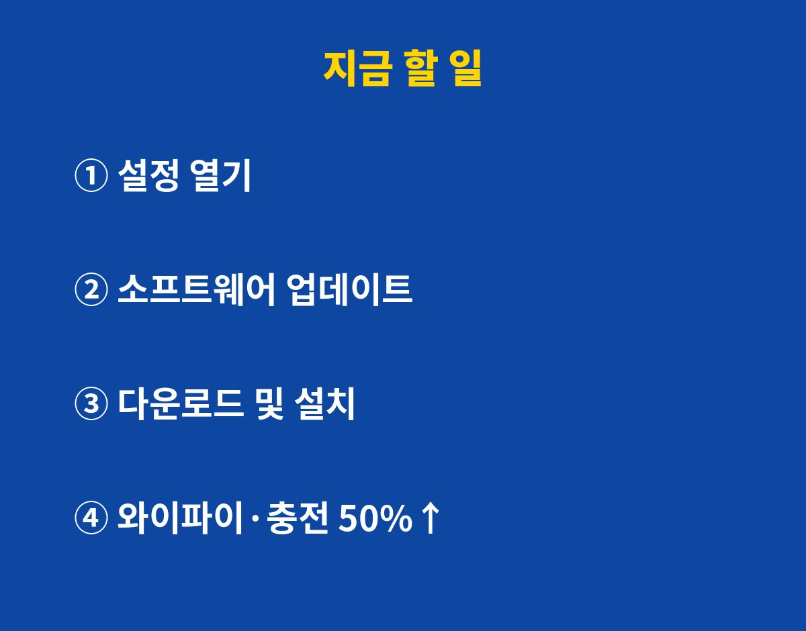

갤럭시 보안 업데이트 10월분에서 고쳐진 보안 구멍이 무려 49개, 그중 치명적 등급만 9건이에요. 갤럭시 쓰고 있는데 아직 "나중에 설치" 눌러 두셨다면, 내 폰이 지금 어떤 상태인지 궁금하시죠?
결론부터 말하면 업데이트 알림이 떴다면 오늘 바로 누르는 게 답이에요. 아직 안 떴다면 순차 배포 중일 수 있으니 직접 한 번 확인해 보면 되고요. 왜 그런지, 뭐가 고쳐졌는지 짧게 풀어볼게요.
삼성이 10월 6일 무렵부터 10월 보안 업데이트(SMR) 배포를 시작했어요. 삼성 보안 게시판 기준으로 정리하면 이렇습니다.
| 구분 | 등급 | 건수 |
|---|---|---|
| 안드로이드(구글) 취약점 | 치명적 | 9건 |
| 안드로이드(구글) 취약점 | 높음 | 33건 |
| 안드로이드(구글) 취약점 | 보통 | 3건 |
| 삼성 반도체 부품 | 높음 | 4건 |
| 합계 | - | 49건 |
"치명적"은 말 그대로 제일 위험한 등급이에요. 쉽게 말해 문은 잠갔는데 창문이 9개 열려 있던 셈이죠. 숫자만 봐도 미루고 싶은 마음이 쏙 들어갑니다.
대표적인 게 두 가지예요. 하나는 영상 파일을 처리하는 부품(libsmkvextractor)에서 생긴 범위 밖 쓰기 문제예요. 정해진 칸 밖에 데이터를 써 버리는 버그인데, 이걸 악용하면 공격자가 폰 안에서 원하는 코드를 실행할 수 있거든요.
다른 하나는 WSM 서비스의 해제 후 사용 문제예요. 이미 치운 메모리를 다시 쓰는 버그라고 보면 되는데, 최악의 경우 시스템 수준까지 권한이 넘어갈 수 있었어요. 폰 깊숙한 곳 열쇠를 남이 쥐는 거죠.
이 밖에도 이미지 처리, 삼성 TTS(글을 읽어 주는 음성 기능), 잠금 설정(Locksettings), 접근 제어 관련 문제도 함께 고쳐졌어요. 잠금 화면 쪽까지 손봤다는 건 그냥 넘기기 찜찜한 부분이죠.
지금까지 확인된 바로는 갤럭시 S26, S26+, S26 울트라, S26 FE, Z 폴드8, Z 폴드8 울트라, Z 플립8 같은 최신 기종부터 업데이트가 풀렸어요. 삼성 고유 취약점 패치는 안드로이드 14~17 기기가 대상이고요.
다만 배포는 국가·기종·통신사에 따라 순서대로 퍼져요. 친구 폰엔 떴는데 내 폰엔 안 떴다? 고장 아니에요. 줄 서는 중일 뿐이에요. 대신 가끔 직접 확인해 주는 게 좋습니다.
어렵지 않아요. 아래 순서대로만 누르면 됩니다.
1단계 설정 앱 열기
2단계 맨 아래 소프트웨어 업데이트 누르기
3단계 다운로드 및 설치 누르기
4단계 다운로드가 끝나면 재시작
팁 하나 드리면, 와이파이에 연결하고 배터리는 넉넉할 때 하세요. 재시작까지 몇 분 걸리니 출근길 지하철보단 자기 전이 딱이에요. 회사 메일이나 사내 앱을 폰으로 쓰는 직장인이라면 더더욱 미루지 마세요. 회사 계정이 털리면 내 폰 하나로 끝나는 문제가 아니거든요.

이런 걱정, 다들 한 번쯤 해 보셨죠. 그런데 보안 패치는 새 기능을 잔뜩 넣는 큰 업데이트와 달리 구멍을 메우는 작업이 중심이에요. 반대로 미루면 이미 알려진 구멍을 그대로 들고 다니는 셈이 되고요. 취약점이 공개되면 노리는 쪽도 그걸 보고 움직이거든요.
참고로 삼성은 일부 취약점의 세부 내용을 아직 공개하지 않았어요. 사용자 대부분이 패치를 받기 전까지 정보를 아끼는 거죠. 그만큼 "일단 설치부터"가 정답이라는 뜻이기도 합니다.
여러분 폰은 지금 몇 월 보안 패치 상태인가요? 설정 > 휴대전화 정보 > 소프트웨어 정보에서 확인해 보고 댓글로 알려 주세요!
폰·앱·보안 소식 빠르게 받고 싶다면 구독 눌러 두세요. 털리기 전에 먼저 알려드릴게요.
기사·공식 발표 기준이며 출시·가격 정보는 바뀔 수 있어요.